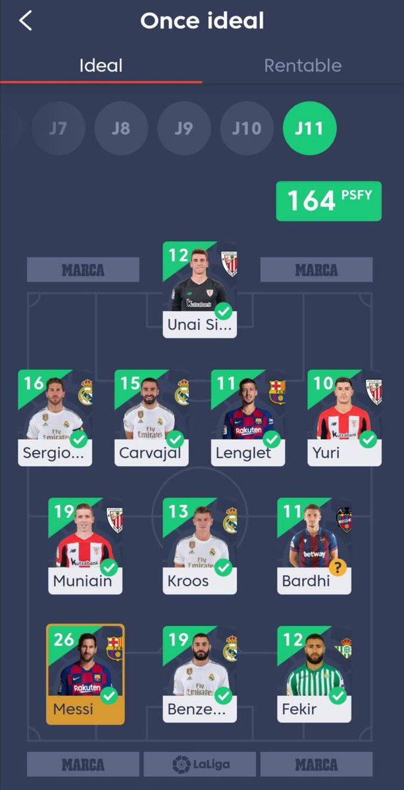

|

|
DEBERÍAS SABER...
Para el funcionamiento de esta página web es necesario estar en una liga compitiendo como
por ejemplo "la liga fantasy" de Marca. Existen otro tipo de paginas que hacen lo mismo, simplemente
escoge la que más te guste y !A Jugar!.
En este tipo de ligas hay que estar muy atento al mercado para fichar jugadores para tu equipo por lo cual
esta página te ofrece un sistema de búsqueda para fichar los jugadores en torno a tus expectativas.
Al principio del juego te dan un dinero limitado por el cual tienes que escoger ciertos jugadores para formar tu
plantilla y esta página (entre otras cosas) te hace una búsqueda de los jugadores correspondiente al precio que quieras
gastar y a las estadísticas que tengan.
¡SOLO QUEDA TENER EL MEJOR EQUIPO Y GANAR LA LIGA A LOS DEMÁS USUARIOS!
|